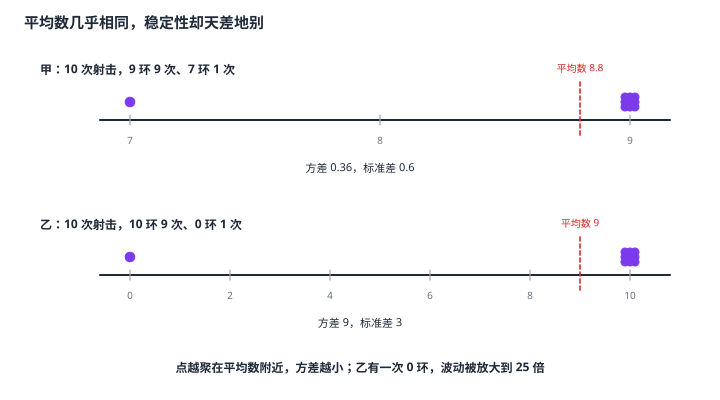

数据的离散程度（方差与标准差）
平均数、中位数、众数都只说「中心在哪」，但两组数据平均数可能完全相同，稳定性却天差地别——甲十次射击九次 9 环、一次 7 环，乙九次 10 环、一次脱靶，平均数一个 8.8、一个 9，差得不多，稳定性却天差地别。要衡量「数据围着中心散得有多开」，用方差：先算每个数据与平均数的偏差，平方后取平均，s^2=1/n\sum≤ft(x_i-\barx)^2。开方后得到标准差，它与原数据同单位，好比「平均差多少」。方差越大越分散。初中还有更粗糙的极差（最大值减最小值），它只用了两个端点，信息太少。
| 所属主题 | 统计 |
|---|---|
| 所属模块 | 统计与概率 |
| 课标学段 | 第四学段（7~9 年级） |
| 前置知识 | 数据的集中趋势（平均数·中位数·众数）、统计图表、二次根式 |
| 核心素养 | 数据观念推理能力运算能力 |
教材定位
人民教育出版社《人教版（2024版）义务教育教科书·数学》
八年级下册第24章 数据的分析24.2 数据的离散程度
对应八下 24.2 数据的离散程度：方差、标准差与极差。
说明
先看最粗糙的工具：极差 = 最大值 - 最小值。它只用了两个端点，信息太少——数据 1、50、50、50 与 1、2、50、100 的极差都是 99，但两者的分散程度完全不同。所以还需要更细的度量。
方差的算法分五步：① 求平均数 \barx；② 求每个数据与平均数的偏差 x_i-\barx（可以是负数）；③ 把每个偏差平方（这一步是关键，平方消掉了正负号，让偏离无论大小都变成正的贡献）；④ 把这些平方相加再除以数据个数 n；⑤ 若要标准差，再开平方。公式是 s^2=1/n≤ft[≤ft(x_1-\barx)^2+≤ft(x_2-\barx)^2+\cdots+≤ft(x_n-\barx)^2]。初中阶段分母取 n（不是 n-1）。
标准差 s=\sqrts^2，是方差的算术平方根。它与原数据同单位——数据是「环」，标准差也是「环」；而方差的单位是「环的平方」，读起来别扭。方差大、标准差也大，数据越分散；两者数值上不能直接比大小（一个是平方，一个不是），但大小关系一致。
方差的直观含义：它衡量的是各数据到平均数的平均偏离程度。偏差平方后再平均，等于说「这个数据离中心平均有多远」。因此方差越小，说明数据越集中在平均数附近、越稳定；方差越大，说明数据忽高忽低、越不稳定。
比较两组数据时的顺序很重要：先比平均数，平均数相同（或接近）再比方差。平均数不同就直接比方差没有意义——一个平均 80 分方差 5 的班和一个平均 60 分方差 20 的班，不能说第二个班「更不稳定」就说它更差。事实上，平均数反映水平高低，方差反映稳定程度，两者是两个不同维度。
使用场景
选拔与评价：考生平均分相同时，方差小的说明发挥稳定、抗压能力强，优先录取；方差大的说明有失常风险。
产品质量：某批零件长度的方差小，说明加工精度高、尺寸一致；用极差只能发现个别不合格品，用方差能整体刻画一致性。
注意点
分母是数据个数 n，不是 n-1。初中阶段方差一律除以 n。
偏差先平方再相加，不能先把偏差相加——偏差之和恒为 0（因为 \sum(x_i-\barx)=0），先加就全抵消了。这是最容易犯的错：为什么公式里每一项都要平方，答案就在这里。
标准差别忘了开方。方差算出来是「单位的平方」，标准差才回到原单位。题目问「标准差是多少」时，只写方差不算答案。
方差大小要在同一组数据的同一单位下才有可比性。两组单位不同的数据不能直接比方差；比较两组数据前先确认它们衡量的是同一个量。
证明

图 1：两组数据平均数几乎相同，稳定性却天差地别——甲的偏差都很小（方差 0.36），乙有一个 0 环把偏差拉到 9（方差 9）
证明
结论 1计算方差时偏差必须先平方再相加：直接相加会正负相消、结果恒为 0，毫无信息。
偏差 x_i-\barx 有正有负，直接相加会互相抵消（所有偏差之和恒为 0，因为平均数正是让正负平衡的那个位置），结果永远是 0，毫无信息。平方之后每个偏差都变成非负的「偏离量」，离中心越远贡献越大，再取平均就得到「平均偏离多远」。平方这一步不是为了数学上的方便，而是为了让「远」这件事能被累加。
关键一步依据是平方的两条性质：一是平方非负，a^2≥ 0，把带符号的偏差变成非负的「偏离量」，正负抵消的顾虑消失；二是偏离越大平方越大，数据离中心多远就以多大的权重计入平均。两条合起来才谈得上「平均偏离多远」。没有平方这一步，所有偏差之和恒为 0（平均数正是让正负平衡的那个位置），结果永远是 0，毫无信息。
结论 2方差越小数据越稳定：方差为 0 是最小值且只有所有数据完全相同时才能取到，「方差小」严格对应「数据都挤在平均数附近」。
设数据都等于平均数（完全没有波动），则每个偏差都是 0，方差为 0——这是方差的最小值，只有所有数据完全相同时才能取到。数据越分散，偏差的绝对值越大，平方后越大，方差也越大。于是「方差小」严格对应「数据都挤在平均数附近」。
关键一步依据是平方与取平均都不改变大小顺序：每个偏差都平方了，全部数据等于平均数时每个偏差都是 0，平方相加再除以 n 得 0，这是方差的最小值，只有所有数据完全相同时才能取到；数据越分散，偏差的绝对值越大，平方后越大，方差也越大。
结论 3标准差是方差的算术平方根：它把被平方过的单位还原回原数据的单位，并保留「偏差的典型大小」这一信息。
方差的计算过程中对偏差做了平方，单位也跟着平方了。若数据以「米」为单位，方差的单位是「米²」，拿它去和「米」比较毫无意义。开平方把单位还原回「米」，并且保留「偏差的典型大小」这一信息——这正是实际测量中需要的（说「误差的标准差是 3 厘米」比「方差是 9 平方厘米」直观得多）。
关键一步依据是两条量纲规则：平方会把单位一起平方，数据以「米」为单位时方差的单位就是「米²」，与「米」不同量纲、不能直接比大小；而开平方是唯一能把这个量纲还原回「米」的操作，同时保留「偏差的典型大小」这一信息——这正是实际测量中需要的（说「误差的标准差是 3 厘米」比「方差是 9 平方厘米」直观得多）。注意开方前后大小关系不变：方差大，标准差也大。
结论 4比较两组数据必须先比平均数再比方差：平均数回答「水平多高」，方差回答「稳不稳」，是两个不同维度。
平均数与方差回答的是两个不同的问题。平均数回答「水平多高」，方差回答「稳不稳」。一个班平均 90 分方差 20，另一个平均 60 分方差 2——第二个班稳得多，但水平低得多。只看方差就下结论，必然片面。先水平后稳定是这个环节最该记住的次序。
关键一步两个统计量各有各的问题，一个班平均 90 分方差 20，另一个平均 60 分方差 2——第二个班稳得多，但水平低得多，方差只说「围着各自的中心散得有多开」，不保证两个中心一样高。只看方差就下结论，必然片面。先水平后稳定是这个环节最该记住的次序。
动手实验
用同一副扑克牌做两次记录，记录十张牌的点数之和（当花牌按 10 计），算出平均数与方差。然后把其中一张最大的牌换成最小的再算一次——比较两次的平均数与方差各自变了多少。再做第二组：把十张牌都换成同一张点数，方差直接变成 0，这就是「完全没有波动」的极端情形。把这几组数据并排画成数轴上的点串，直观感受「点串得多紧」与「方差多大」是同一件事的两种说法。
解题思路
求方差与标准差五步：① 求平均数 \barx；② 逐个求偏差 x_i-\barx（列出表格，别在脑子里算）；③ 偏差平方；④ 相加除以 n 得方差；⑤ 需要标准差就再开平方。表格能避免漏项和算错符号。
快速验算两招：① 方差算完后，偏差之和应为 0；② 用另一条公式 s^2=\dfrac\sum x_i^2n-\barx^2 独立算一遍，两条结果应一致。第二招在数据较多时更快，但要记得 \sum x_i^2 是「每个数平方后相加」，别写成「和的平方」。
比较两组数据的顺序：① 先看平均数（水平）；② 平均数相同或接近时才看方差（稳定）；③ 两项都要说，答题时把「水平相当，稳定性不同」这类完整判断写出来。
按场景的例题
例 1（场景：数据调查） 求一组数据的方差与标准差
求数据 2、4、4、6、10 的方差与标准差（结果保留一位小数）。
解：① 平均数 \barx=2+4+4+6+10/5=26/5=5.2。② 求偏差并平方：(2-5.2)^2=10.24，(4-5.2)^2=1.44，(4-5.2)^2=1.44，(6-5.2)^2=0.64，(10-5.2)^2=23.04。③ 平方相加 =10.24+1.44+1.44+0.64+23.04=36.8。④ 方差 s^2=36.8/5=7.36。⑤ 标准差 s=\sqrt7.36\approx 2.7。另用验算公式核对：\sum x_i^2=4+16+16+36+100=172，172/5-5.2^2=34.4-27.04=7.36，一致 ✓。
答：方差为 7.36，标准差约为 2.7。
例 2（场景：竞技与游戏） 平均数相同的两组射击成绩比稳定性
甲、乙两名射击运动员各射击 10 次，成绩（环数）如下：甲是 9、9、9、9、9、9、9、9、9、7；乙是 10、10、10、10、10、10、10、10、10、0。两人的平均成绩分别是多少？各人的方差是多少？据此说明谁的成绩更稳定。
解：甲的平均数 =9× 9+7/10=88/10=8.8，偏差只有两个取值：9-8.8=0.2（9 次）与 7-8.8=-1.8（1 次），平方后 0.04× 9+3.24=3.6，方差 =3.6/10=0.36。乙的平均数 =10× 9+0/10=90/10=9，偏差为 10-9=1（9 次）与 0-9=-9（1 次），平方后 1× 9+81=90，方差 =90/10=9。两人的平均成绩接近（8.8 与 9），但甲的方差 0.36 远小于乙的方差 9，说明甲每次的成绩都稳定在 9 环上下，而乙的成绩波动极大——虽然平均环数相同，但方差差了 9÷ 0.36=25 倍，实际水平是甲更稳定。
答：甲平均 8.8 环、方差 0.36；乙平均 9 环、方差 9；甲的成绩更稳定。
例 3（场景：方案选择） 选拔时用方差衡量发挥稳定性
甲、乙两名射击运动员各射击 5 次，成绩（环数）如下：甲是 8、9、10、9、9；乙是 8、8、10、10、10。两人平均成绩相同，若只能选一人参加稳定性要求高的比赛，应该选谁？请用平均数与方差说明理由。
解：先比平均数。甲：8+9+10+9+9/5=45/5=9；乙：8+8+10+10+10/5=46/5=9.2。乙的平均成绩略高，但差距只有 0.2 环。再比方差。甲的偏差为 -1、0、1、0、0，平方后 1+0+1+0+0=2，方差 =2/5=0.4。乙的偏差为 -1.2、-1.2、0.8、0.8、0.8，平方后 1.44+1.44+0.64+0.64+0.64=4.8，方差 =4.8/5=0.96。甲的方差 0.4 小于乙的 0.96，甲的成绩更集中、更稳定；乙的平均成绩虽略高，但波动大（出现两次 8 环），在要求稳定发挥的比赛中风险更高。因此应选甲。
答：甲平均 9 环、方差 0.4；乙平均 9.2 环、方差 0.96；应选甲，他的发挥更稳定。
常用推论
方差是「用数字说稳定」的尺子。两个平均数相同的队伍比实力，比方差；两个方差相同的队伍比水平，比平均数——平均数管高低，方差管稳定，两个维度缺一不可。很多评价体系的失真，根源就是把这两个维度混为一谈。
方差计算的每一步都有道理：偏差要减平均数（找离中心的距离）、偏差要平方（消掉正负号、放大远距离的贡献）、要除以 n（求平均）、最后开方（还原单位）。这四步其实和「求一组数据的代表值」是同一套流程——先定中心、再看离散，只是把「看」变成了「算」。
从极差到方差再到标准差，是信息量逐级增加的过程：极差只用了两端点，方差用了全部数据，标准差在方差的基础上把单位还原。评价数据的工具也有层次——粗略的工具快但可能骗人，精细的工具慢但站得住，按问题选合适的尺子就行。
易错点
错数据 2、4、4、6、10 的方差是 (-3.2)+(-1.2)+(-1.2)+0.8+4.8/5。
为什么错偏差直接相加了。所有偏差之和恒为 0，算出来必然是 0（这里确实得 0），说明这一路的计算毫无意义。方差里每一项偏差都必须先平方，正是为了消除正负抵消。
正确先平方再求和：10.24+1.44+1.44+0.64+23.04/5=36.8/5=7.36。
错数据 2、4、4、6、10 的方差是 7.36，所以标准差也是 7.36。
为什么错把方差直接当成了标准差。标准差是方差的算术平方根，要再开一次方，且它的单位与原数据相同（这里是「个」），而方差的单位是「个的平方」。
正确标准差 =\sqrt7.36\approx 2.7（个）。
错甲班平均分 85、方差 20，乙班平均分 60、方差 2，所以甲班比乙班更不稳定。
为什么错两个班的平均分差了 25 分，水平根本不在一个层次上，此时比方差没有意义。方差只衡量「围着各自中心散得有多开」，跨水平比较属于拿尺子量错了对象。
正确比较的顺序是：先比水平（平均数），平均数相同或接近时再比稳定（方差）；两者的差距都要在结论里说清。
直观理解
平均数像教室的重心——大家挤得越紧，重心越稳；方差则量的是「散开程度」，数据点像撒在黑板上的一群小球，离重心的平均距离就是它。甲的十个点几乎叠在一起（方差 0.36），乙的九个点挤在右上、一个点孤零零落在左下角（方差 9）——两人的「重心」差不多，可这张黑板给人的感觉完全不是一回事（图 1）。这正是为什么选拔、质检、评估都越来越看重方差：水平高不等于靠得住，稳才是真本事。